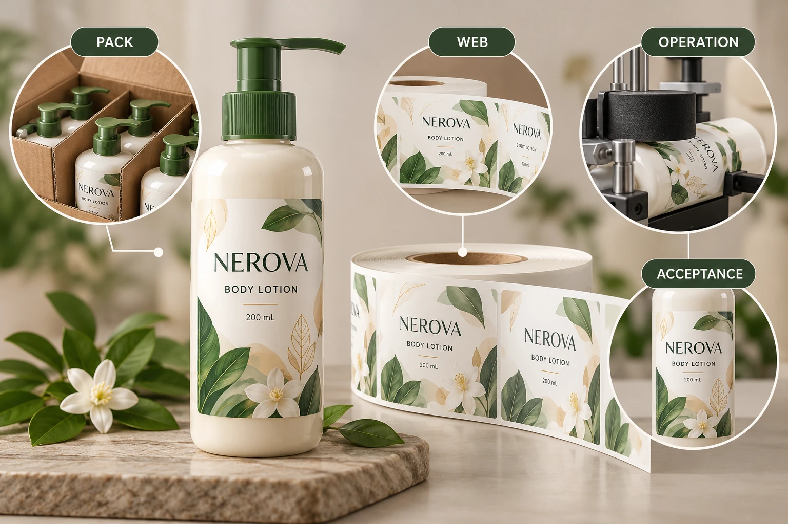

Ask what the trial must decide
Start with the reason for the trial. Is the project introducing a new construction, moving to a different line, changing the supplied web or evaluating a different bottle? Identify which operational questions remain open after bench and artwork reviews.
Define the claim the team wants to make afterward. A trial might support a particular combination on an identified operation under stated conditions. It should not automatically approve every speed, bottle batch, artwork or future substitution that was not represented.
Keep the trial's purpose narrow enough to act on. If the primary question is clear-label sensing, use the specific detector review alongside the broader brief. If the concern is applied appearance, name that feature and the brand reference. Different observations can share one trial while retaining separate decision owners.
Supply representative inputs and name the differences
Identify the bottle, closure, fill condition and surface. Identify the full label construction, artwork, liner, gap and delivery arrangement. Ask the receiving operator what sample format and quantity are required for its authorised trial method.
The roll-specification guide defines the handoff fields. This trial brief uses those fields as controlled inputs and adds the observation plan, exceptions and release scope. A specification accepted on paper and a trial completed under recorded conditions provide different evidence.
If production-representative material is unavailable, list the deviations. A preliminary roll may help investigate one question while leaving another unresolved. Ask the technical owner which findings can reasonably carry forward and which require the final construction. Do not hide the difference under the word sample.
Let the site own the operating procedure
The authorised operator and equipment owner should establish the safe setup, operating conditions and response to an event. This article does not prescribe speed, tension, pressure, sensor adjustments or access to moving equipment.
Agree which observations will be recorded and where. Distinguish events at detection, dispensing, placement and later handling rather than reporting all interruptions as bad labels. Record the actual sample and relevant event location so the technical parties can investigate the right interface.
Include planned stops or changes only through the site's procedure. If the trial changes material or an operating condition, record when and why. Otherwise a later acceptable sample may be incorrectly attributed to the original arrangement.
Write acceptance before running the trial
Ask the brand, operator and relevant technical reviewers to define their criteria and responsibilities. The brief should identify the evidence needed to close each question, without inventing universal numerical limits.
| Trial field | Input or record | Release use |
|---|---|---|
| Objective | Specific unresolved operating decision | Keeps the trial answerable |
| Pack | Container, closure, fill and surface references | Defines represented geometry and condition |
| Web | Construction, artwork and supplied format | Connects evidence to the actual order |
| Operation | Site, equipment and authorised procedure | Defines where the result applies |
| Observation | Named event, stage and responsible recorder | Makes findings traceable |
| Acceptance | Criteria and reviewer for each question | Prevents approval by an unrelated role |
| Deviations | Changed inputs or procedure limitations | Shows what remains unqualified |
| Release | Accepted combination and outstanding conditions | Controls the next production step |
Complete the objective, inputs and acceptance roles first. Have the site conduct its authorised trial, record observations and deviations, then ask each responsible owner to close the relevant question. Attach the final decision to the exact combination proposed for production.
Leave release pending where an important input was not represented or a required observation was not made. The adhesive sample guide covers comparable bottle-side observations; a short line run does not automatically establish later-use performance beyond its scope.

Use a proportionate trial rather than an undefined demonstration
A hypothetical repeat job with an unchanged, documented operating combination may justify confirming existing evidence and focusing on identified changes. The purpose is not to manufacture a new trial for every reorder without reason.
A transfer to a new co-packer can justify a relevant operating review even when the artwork and bottle remain familiar. The receiving line is part of the combination. Evidence from another site should be identified as prior context, not silently relabelled as approval for this one.
For custom cosmetic labels, send the bottle, artwork, dimensions, quantities, current roll requirements and trial objective. Include the operator's requested sample scope. The inquiry form prepares a message; send supporting documents by email or WhatsApp. Ask for material that can answer the defined trial question, with the remaining limits kept visible.